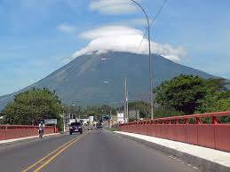
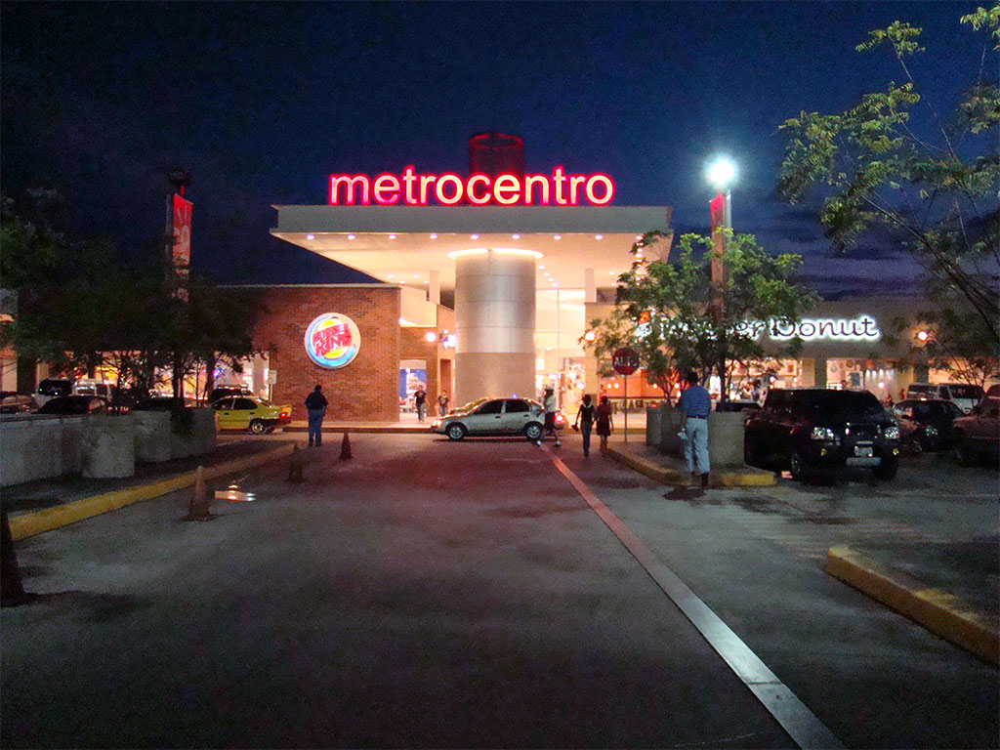

San Miguel es una ciudad y municipio del departamento de San Miguel, El Salvador. Es también la cabecera departamental del departamento homónimo. Históricamente ha sido y sigue siendo, por casi 500 años ya, la ciudad más importante de la zona oriental del país. Tiene una población estimada de 247 119 habitantes para el año 2013, por lo que representa la tercera ciudad en importancia de la nación salvadoreña.
San Miguel fue fundada el 8 de mayo de 1530 por el Capitán Luis de Moscoso, convirtiéndose así en la segunda ciudad colonial española de los territorios hoy salvadoreños, pero se trasladó a su actual ubicación hasta en 1586. Desde entonces, San Miguel se convirtió en émula y rival de San Salvador como segunda ciudad en importancia dentro de la Alcaldía Mayor de San Salvador y, posteriormente, de la Intendencia de San Salvador durante toda la época de colonización española. San Miguel vio fenecido su liderazgo político dentro de la nación a finales del siglo XIX y comienzos del XX debido al ascenso económico de Santa Ana con la agricultura del café. Aunado al hecho que el gobierno salvadoreño dividió toda la zona oriental en cuatro departamentos con el afán de disminuir la influencia política de la élite migueleña.
Hacia mediados del siglo XX tuvo un importante desarrollo económico debido a la agricultura de algodón y henequén, pero la guerra civil salvadoreña alteró su economía y sociedad. En la actualidad, ya a finales del siglo XX y comienzos del XXI, San Miguel ha ido recuperando de a poco su liderazgo económico y político en gran medida por las remesas familiares de los salvadoreños en los Estados Unidos que han reposicionado a la ciudad como el principal centro de comercio de toda la Zona Oriental de El Salvador. Hoy por hoy, exceptuando a San Salvador -capital de la nación-, San Miguel es la ciudad líder de toda una región en El Salvador. Representando la "capital" económica de toda la zona oriental salvadoreña, abarcando cuatro de los 14 departamentos salvadoreños, tres de ellos siendo los más grandes de esta nación.
 